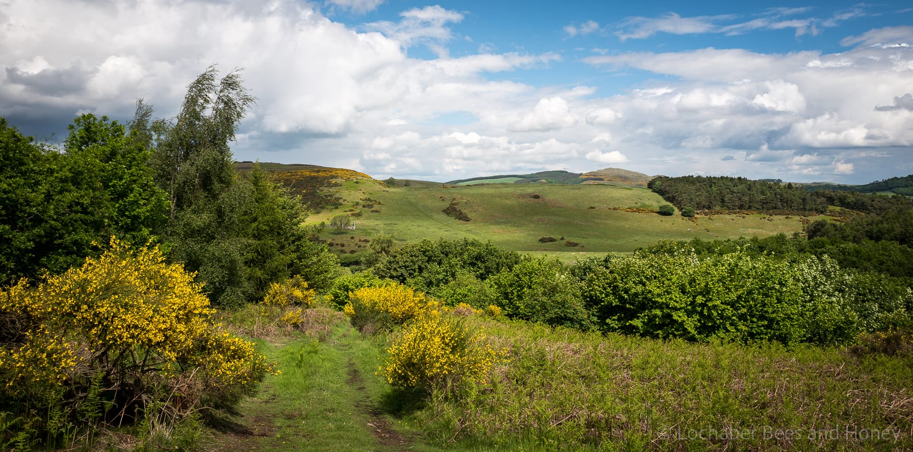

I keep bees in Fife on the east coast of Scotland and on the remote west coast. The Fife apiaries are productive and I get two honey crops a season; the spring honey is harvested in early June and the summer crop in late August. My bees on the west coast produce a small crop of heather honey in late September.
My Fife bees forage widely on the rich agricultural land in central Fife and the scrubby woodland and rough grazing of the rolling North Fife hills or the suburban gardens of St Andrews and surrounding farmland. There is ample forage available, ranging from early season willow, oil seed rape and dandelion to the later flowering field beans, blackberry and clover. There are also a great range of tree nectars available during the season including hawthorn, sycamore and lime. Individual hives often specialise and so each is extracted separately and may have a distinct and unique flavour.

Spring honey is usually high in glucose and, without suitable preparation, tends to crystallise coarsely and quickly. I therefore warm it gently and seed it with a small amount of fine textured set honey before allowing it to recrystallise. This produces what is sometimes called ‘creamed’ or ‘soft set’ honey, with a lovely ‘melt on the tongue’ texture. It is spoonable but not clear. It has a long shelf life but rarely lasts that long.

Summer honey is a clear, golden, runny honey. Over time this honey will crystallise. Crystallisation is generally a sign of high quality honey and is rarely seen in the supermarket ultrafiltered and pasteurised honeys labelled ‘Produce of EU and non-EU countries’ (which, you’ll realise, means ‘anywhere’). This filtration removes almost all the pollen. In contrast, high quality honey contains a lot of residual pollen around which the crystals form. The crystallisation will not affect the excellent flavour of the honey, and can be reversed by gently warming the jar until the crystals disappear. Most jars are finished long before there is any sign of crystallisation.
My west coast heather honey is produced in limited amounts and usually used to make heather blend soft set honeys. These are delicious but only available in small quantities.
If you have a jar of my honey you can check its provenance here.
My honey is usually sold by select cafe’s, farm shops and other artisinal outlets that specialise in high quality local produce. If the following happen to be out of stock ask them to contact me for a restock … but also make sure you check some of the other delicious local produce they sell.
- Loch Leven’s Larder, Nr. Kinross, Fife
- Pillars of Hercules, Nr. Falkland, Fife
- Balgove Larder, St Andrews, Fife
- Salen Jetty Shop, Salen, Ardnamurchan
- Wellsgreen Farm Shop, Windygates, Fife